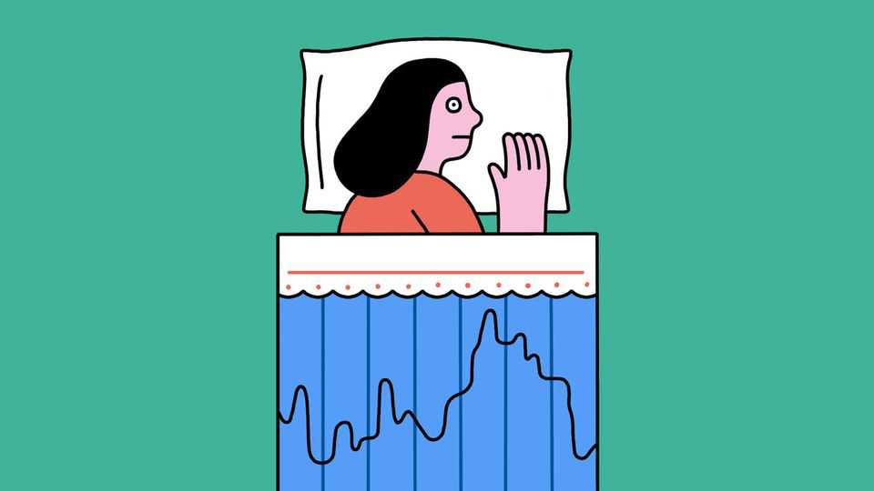

Should you use a sleep tracker?
They are pretty accurate. But they could keep you up at night
June 4th 2026

Nearly half of all Americans and around 40% of Britons now use a smartwatch, smart ring, phone app or another similar device to track their sleep. Are these gadgets accurate—and do their users get a better night’s rest?
Not getting enough sleep can cause all manner of health problems, from dementia to diabetes. A new study, published in Nature, finds a U-shaped relationship between how long people sleep and markers of biological ageing. The researchers used data from the UK Biobank, a database containing health and lifestyle information on roughly 500,000 people. Those who got between 6.4 and 7.8 hours of shut-eye a night seemed to experience slower ageing in both brain and body than those who slept either more or less.
Sleep trackers promise to help people hit this sweet spot. Apps typically record movement and sound, sometimes inferring breathing rates from the audio. Smartwatches record movement and use photoplethysmography—measuring blood flow by shining low-intensity light onto the skin and detecting how much reflects back. This is used to estimate heart and breathing rates. Rings often measure skin temperature, too.
Most trackers are very good at distinguishing sleep from being awake. Several studies have compared them to polysomnography, which uses electrodes to record eye movements, brain activity, muscle tone and heart rate, and is the gold standard for measuring sleep. One paper, published in Sensors, a specialist journal, in 2024, tested three popular wearable trackers and found that all agreed with polysomnography around 95% of the time in telling sleep from wakefulness across the night.
When it comes to identifying the different sleep stages, trackers are less accurate. A good night requires cycling between rapid-eye movement (REM) sleep, in which dreams are had, and several stages of non-REM sleep ranging from light to deep. Wearables agree with polysomnography on sleep-stage classification only around 50-80% of the time. That merits a C+ to B+, says Rebecca Robbins, a sleep scientist at Harvard Medical School, who was involved in one of the studies. Not great—yet many devices include these metrics in their calculation of sleep scores.
Despite trackers’ shortcomings, most sleep researchers and therapists view them positively. Dr Robbins says they give people a better, more objective sense of how long they slept (and may reveal they are in fact getting plenty of winks). Plus, they do seem to improve sleep habits. In a survey by the American Academy of Sleep Medicine 55% of adults who reported using sleep trackers said they had changed their behaviour after learning from the data. One small study, published in the Journal of Clinical Sleep Medicine in 2020, found that wearing a sleep tracker for a week improved self-reported sleep quality.
Too much data can have downsides, though. Unlike trying to eat healthily or exercise, putting more thought and effort into sleeping can backfire. As many as 30% of those who track their sleep report feeling anxious about the data they collect, a phenomenon researchers called orthosomnia. Concern about poor sleep is one of the most common causes of a sleepless night; only financial worries keep people up more often. But sleep data is not worth losing sleep over, because there is an alternative to sleep tracking: whether you wake up feeling rested is the best indicator of how good your night was. ■
After a free, evidence-based guide to health and wellness? Sign up to our weekly Well Informed newsletter.